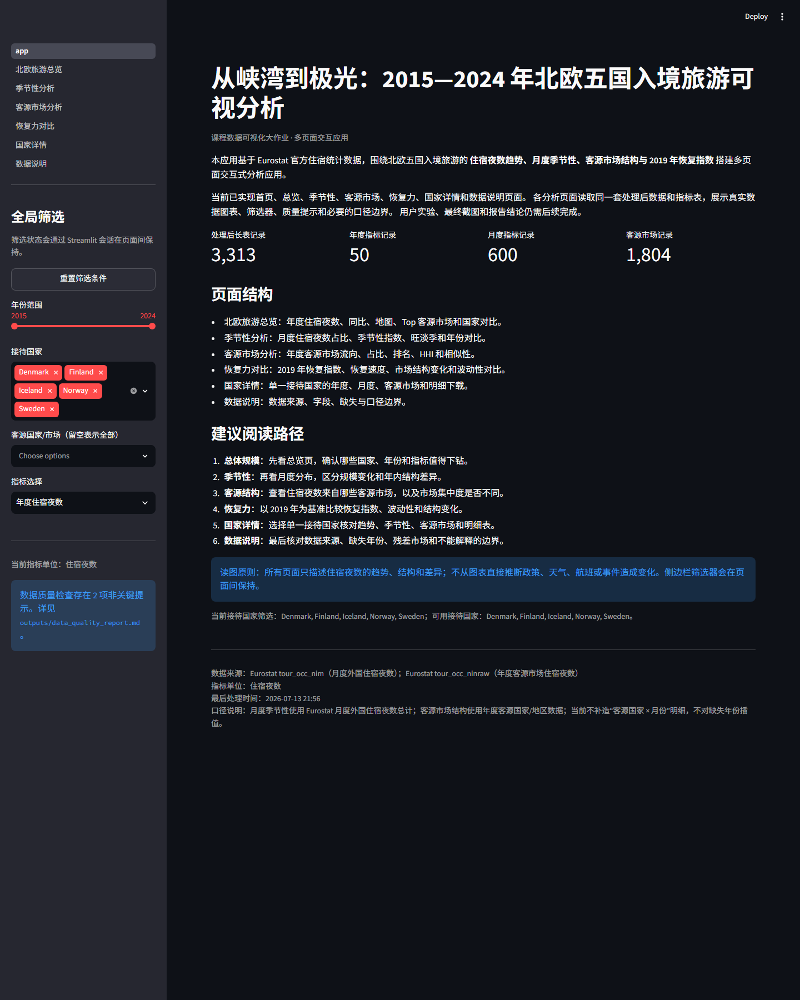
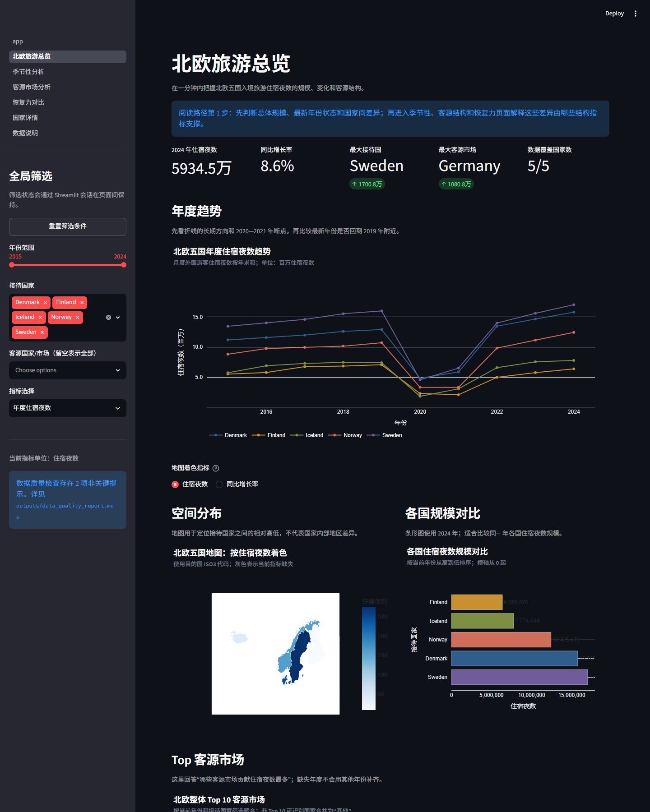
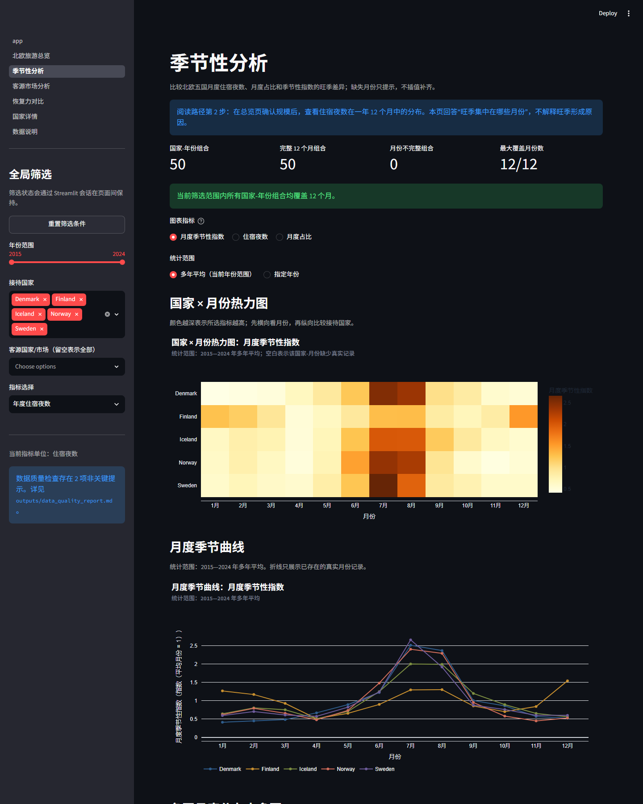
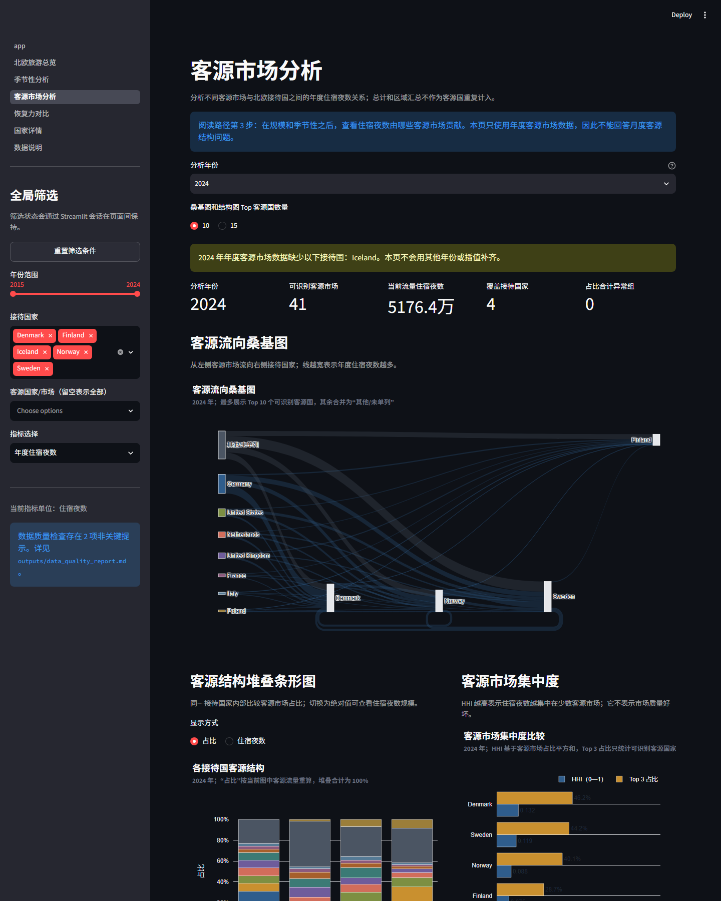
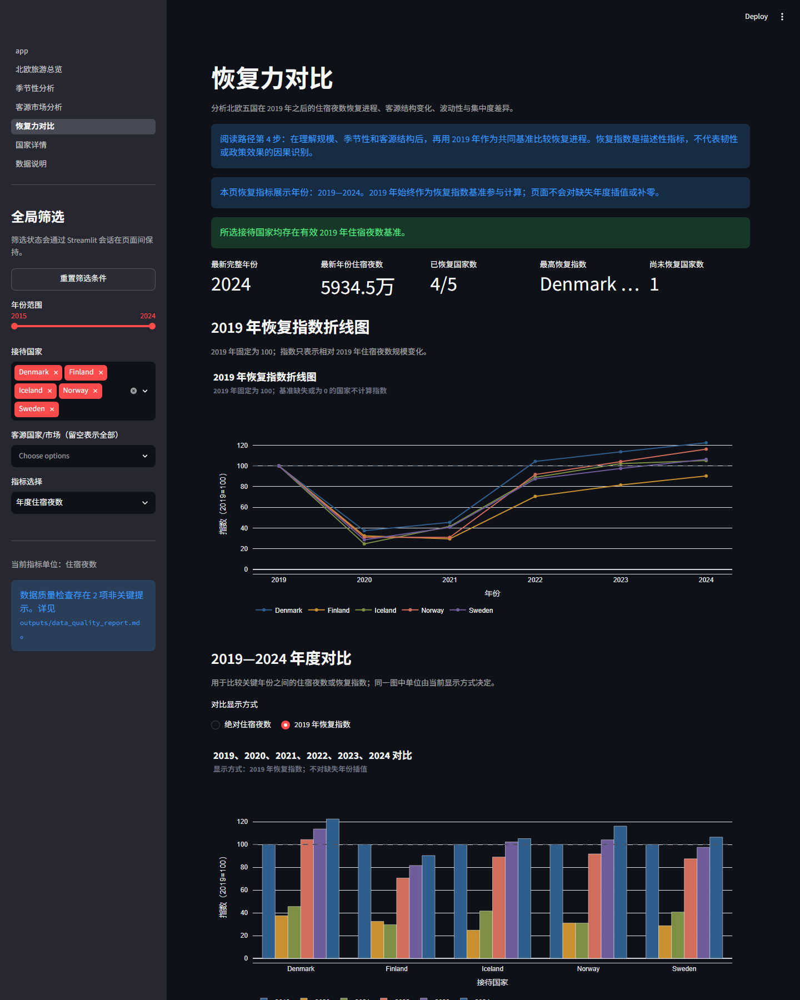
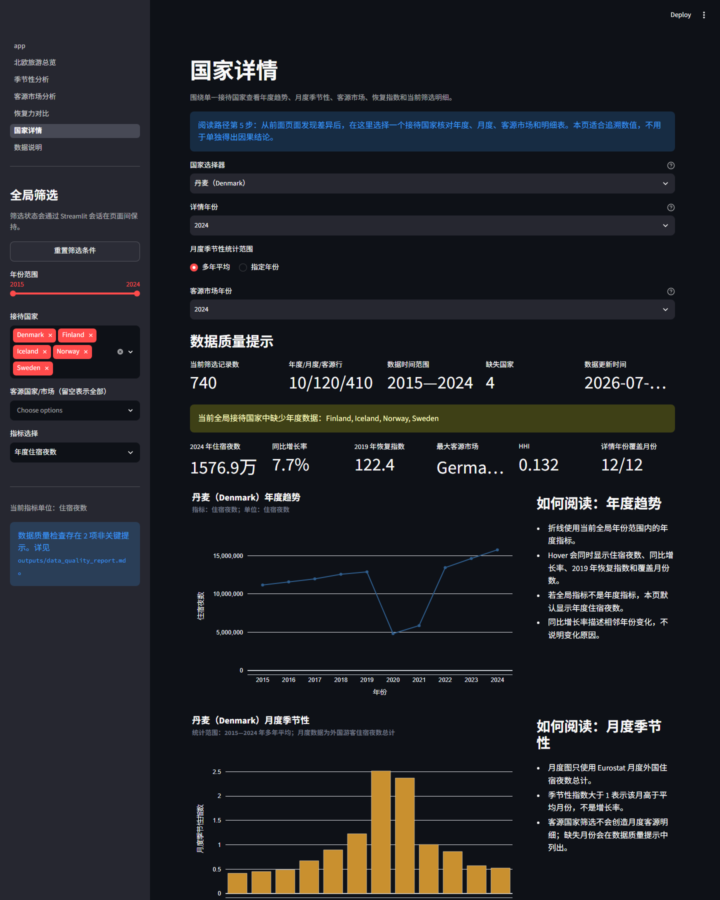
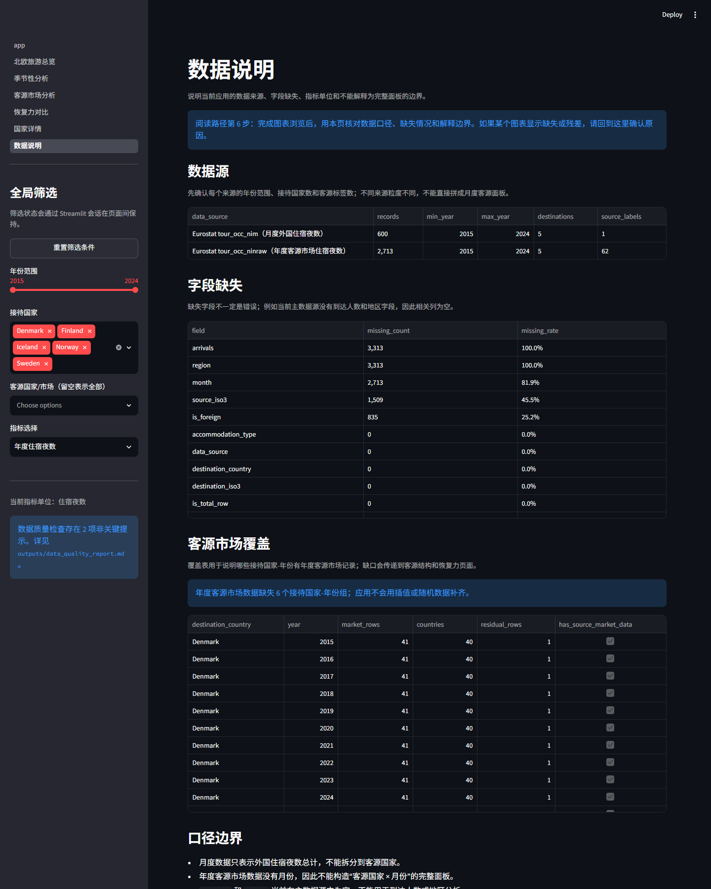

年度住宿夜数趋势
2015—2024 年，五国同轴比较。
2015—2024 · Denmark / Finland / Iceland / Norway / Sweden
北欧五国入境旅游住宿夜数、客源结构、季节性与 2019 年恢复指数的静态可视分析。图表来自同一套已处理真实数据，保留 Plotly 悬停、缩放和图例交互。
2024 年住宿夜数
5934.5万夜 8.6%最大接待国
瑞典（Sweden） 1700.8万夜2023 年最大客源市场
Germany 1110.3万夜处理后长表记录
3,313 真实数据记录overview
2015—2024 年，五国同轴比较。
2024 年，按住宿夜数着色。
2024 年各接待国住宿夜数。
2023 年；使用覆盖五国的年度客源市场表。
seasonality
颜色表示多年平均季节性指数。
同一指标下比较旺季峰值和淡季低谷。
一致纵轴尺度，避免单独缩放夸大差异。
source
从客源市场流向接待国家。
同一接待国内部比较客源市场占比。
HHI 越高表示住宿夜数越集中。
基于客源市场占比向量的余弦相似度。
recovery
2019 年固定为 100。
比较关键年份住宿夜数规模。
最新完整年度：2024。
横轴为年度波动率，纵轴为客源市场集中度。
tables
| 接待国家 | ISO3 | 住宿夜数 | 同比 | 恢复指数 | HHI | Top 3 占比 |
|---|---|---|---|---|---|---|
| 瑞典（Sweden） | SWE | 1700.8万夜 | 9.2% | 106.4 | 0.1 | 44.2% |
| 丹麦（Denmark） | DNK | 1576.9万夜 | 7.7% | 122.4 | 0.1 | 46.2% |
| 挪威（Norway） | NOR | 1242.5万夜 | 11.6% | 116.1 | 0.1 | 40.1% |
| 冰岛（Iceland） | ISL | 777.5万夜 | 2.9% | 105.2 | — | — |
| 芬兰（Finland） | FIN | 636.9万夜 | 10.7% | 90.3 | 0.1 | 28.7% |
| 接待国家 | ISO3 | 峰值月 | 峰值月住宿夜数 | 峰值月占比 | 低谷月 | 夏季占比 | 冬季占比 |
|---|---|---|---|---|---|---|---|
| 瑞典（Sweden） | SWE | 7 月 | 303.4万夜 | 22.2% | 1 月 | 48.6% | 15.9% |
| 丹麦（Denmark） | DNK | 7 月 | 236.2万夜 | 21.0% | 1 月 | 51.0% | 11.6% |
| 挪威（Norway） | NOR | 7 月 | 185.4万夜 | 20.1% | 11 月 | 51.6% | 16.2% |
| 冰岛（Iceland） | ISL | 7 月 | 100.9万夜 | 16.7% | 1 月 | 43.8% | 16.8% |
| 芬兰（Finland） | FIN | 12 月 | 66.0万夜 | 12.9% | 4 月 | 29.2% | 33.2% |
| 接待国家 | ISO3 | HHI | Top 3 占比 | 纳入市场数 |
|---|---|---|---|---|
| 丹麦（Denmark） | DNK | 0.1 | 47.8% | 41 |
| 冰岛（Iceland） | ISL | 0.1 | 51.3% | 41 |
| 瑞典（Sweden） | SWE | 0.1 | 46.3% | 41 |
| 挪威（Norway） | NOR | 0.1 | 40.5% | 41 |
| 芬兰（Finland） | FIN | 0.1 | 30.5% | 41 |
screenshots







本页面展示的是“住宿夜数”，不等同于“入境游客人数”。年度趋势、地图和季节性使用 Eurostat 月度外国住宿夜数总计；客源结构使用 Eurostat 年度客源市场表。
页面只描述趋势、结构、差异和恢复指数，不根据图表直接推断政策、天气、航班或事件原因。